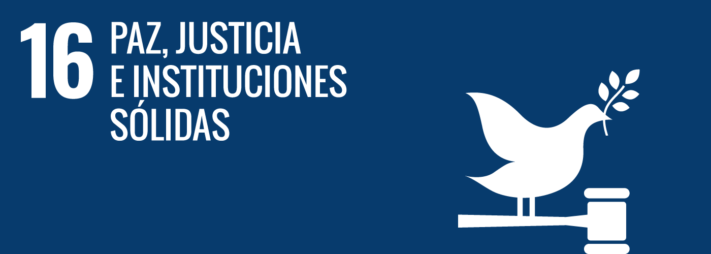

Introducción
El Objetivo de Desarrollo Sostenible 16 (ODS 16), establecido por la Agenda 2030 de las Naciones Unidas, busca promover sociedades pacíficas, inclusivas y justas, donde el acceso a la justicia sea universal y las instituciones sean responsables, transparentes y eficaces.
El Objetivo de Desarrollo Sostenible 16 (ODS 16) es esencial para garantizar sociedades pacíficas, inclusivas y justas. Su importancia radica en que sin paz, justicia e instituciones sólidas, el desarrollo sostenible no puede alcanzarse. Este objetivo se enfoca en:
- Reducir la violencia: Busca disminuir los conflictos, los actos de violencia y los delitos, promoviendo una convivencia pacífica.
- Garantizar acceso a la justicia: Persigue que todas las personas, especialmente las más vulnerables, puedan acceder a servicios legales y se respeten sus derechos.
- Fortalecer las instituciones: Promueve instituciones eficaces, transparentes y responsables, fundamentales para el desarrollo económico, social y político de cualquier comunidad.
- Luchar contra la corrupción y el abuso de poder: Fomenta la rendición de cuentas y la transparencia en todos los niveles de gobierno y organizaciones.
Acciones en comunidad
- Foro Internacional sobre Paz y Justicia
En diferentes ocasiones se han organizado encuentros internacionales en los que se debate la implementación del ODS 16. Por ejemplo, en eventos organizados en el marco de la Agenda 2030, expertos, representantes gubernamentales y de la sociedad civil se reúnen para analizar cómo fortalecer las instituciones democráticas, mejorar la transparencia y promover la rendición de cuentas.
- Seminarios y Mesas Redondas en Países de América Latina
Diversos gobiernos y organizaciones de la sociedad civil en América Latina han promovido seminarios y mesas redondas sobre la importancia de garantizar sociedades pacíficas e inclusivas
- niciativas Locales y Eventos Públicos en España y Otros Países
En España y otros países, se han llevado a cabo iniciativas locales y eventos públicos para sensibilizar a la población sobre la importancia de promover la paz, la justicia y la igualdad de género.
Para promover el ODS 16, es fundamental la participación de la sociedad civil, el sector privado y el gobierno. Algunas acciones comunitarias incluyen:

Proyectos Destacados
Algunos proyectos incluyen:
- Fortalecimiento a OSC: Inversiones para el desarrollo institucional de organizaciones civiles.
- Acceso a la justicia: Iniciativas para garantizar servicios legales a comunidades vulnerables.
- Construcción de paz: Proyectos educativos que promueven valores de convivencia pacífica.

Estadísticas Relevantes
Según datos de la ONU, más de 70 millones de personas han sido desplazadas debido a conflictos y persecuciones. Además, la corrupción cuesta aproximadamente 2.6 billones de dólares anualmente, lo que equivale al 5% del PIB mundial.

Historias de Éxito
En diversas partes del mundo, comunidades han logrado avances significativos en la construcción de paz y justicia. Por ejemplo, en Colombia, el proceso de paz ha permitido la reintegración de excombatientes a la sociedad, promoviendo la reconciliación y el desarrollo comunitario.